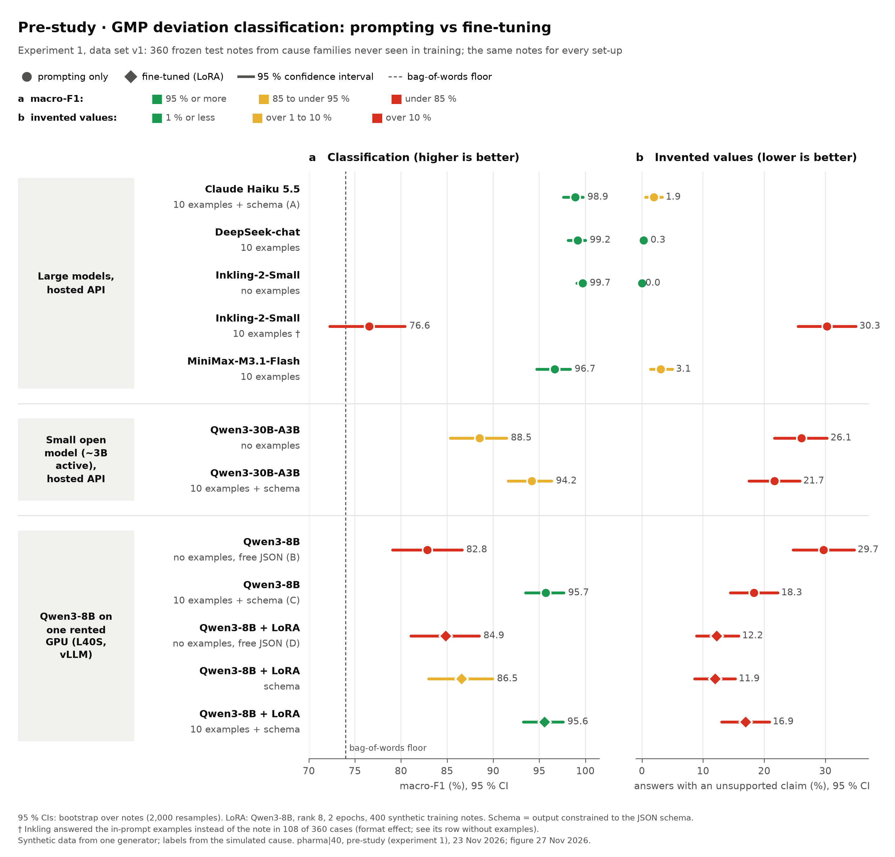
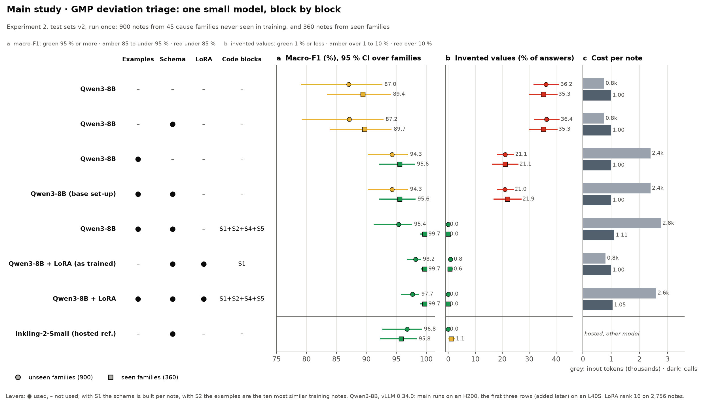

Research experiment
Effects of LoRA fine-tuning and switchable building blocks on classification accuracy and data integrity
Background. Shift staff in pharmaceutical manufacturing describe deviations in short free-text notes. Turning such a note into a structured triage record (class, equipment, batch, time, evidence) is a narrow, repetitive text classification with information extraction that a language model, used as a constrained and repeatable classifier, could prepare for a human reviewer. Two error types matter: a wrong class, and an invented value – an identifier, time or quote that is not in the note, which in Good Manufacturing Practice (GMP) terms is a data-integrity failure.
Methods. We built a synthetic, generator-labelled data set of 4,286 notes from 150 cause families (train 2,756, dev 270, two test sets of 900 notes from unseen families and 360 notes from seen families, written by different models than the training data). Around one small open-weight model (Qwen3-8B) we tested five switchable building blocks – code-extracted candidates with a per-note answer schema (S1), retrieval of similar examples (S2), self-consistency (S3), a grounding check with repair (S4) and a miss screen (S5) – and LoRA fine-tuning in the exact pipeline input format (S6). Development used a hosted stand-in model; training and the main test runs took place in one session on a rented NVIDIA H200, and three baselines were added later on an NVIDIA L40S. Confidence intervals resample whole cause families. A conventional classifier, DeBERTa-v3-base (184 M parameters) fine-tuned on the same training notes on a laptop CPU, was added afterwards as a baseline and as a partner model; its threshold was fixed on dev and pre-registered before it saw the test sets.
Results. The bare model reached 87.0 % macro-F1 on unseen families with an invented value in 36.2 % of the answers; a JSON schema alone changed nothing, ten examples raised it to 94.3 % and lowered invented values to 21.1 %, almost all of them timestamps. Code-side grounding (S1, S4) removed invented values (0.0 %) without loss of classification. A LoRA adapter trained for 20 minutes on 2,756 notes raised macro-F1 to 98.2 % on unseen families (+3.9 points, 95 % CI +1.8 to +7.2) and 99.7 % on seen families, with one model call per note and a third of the prompt tokens. The blocks with retrieval of similar examples (S1+S2+S4+S5) improved classification only where similar cases existed (seen families: +4.2; unseen: +1.0, not significant); on dev, self-consistency tripled the cost without gain, and data amount mattered more than adapter rank (one seed per variant). A hosted reference model that took no part in making the data reached 96.8 % and 95.8 %; the trained 8B model was not worse on unseen families (+1.4, not significant) and better on seen families (+3.9). The conventional classifier reached 89.4 % on unseen families (−8.9 points against the trained 8B model, CI −13.7 to −5.5) and 99.4 % on seen families. As a pre-filter for the language model it lowered macro-F1 on unseen families (−3.3, CI −5.9 to −1.4); as an independent second opinion it agreed with the trained model on 88 % of the unseen notes with 99.6 % accuracy, and the disagreements held 13 of the model's 16 errors.
Conclusion. For this task, classification and grounding are separate problems with separate remedies: training (or examples) decides the class, code decides whether the values are true. A small, specifically trained model inside a thin code pipeline matches large hosted models on this task, can run on modest on-premise hardware, and stays under the plant's version control. A conventional classifier does not replace the language model on new causes, but it is a cheap second opinion: where both agree, the class can be accepted; where they disagree, a person decides. Results are on synthetic data and await confirmation on real plant notes.
A deviation is any departure from an approved instruction, specification or expected result in pharmaceutical manufacturing. It starts as a few lines written by an operator, shift lead or technician – often in a hurry, sometimes in German, sometimes as a handover note or an electronic batch record (eBR) entry, for example: “High-shear granulator stopped during wet massing of batch B2611-042, impeller drive tripped on overcurrent at 03:15, maintenance called.” (an illustrative note in the style of the data set). Quality assurance (QA) then has to triage it: is it an equipment failure, a process parameter excursion, a documentation error, a material issue, or unclear and in need of review? Which equipment, which batch, when, and which words of the note support the decision? This first sorting decides who investigates and how urgently.
The task is therefore a text classification with structured information extraction: one of five classes plus three fields copied from the note and a supporting quote. The sorting is routine but must be right, and the record must not contain anything that nobody observed: EU GMP Annex 11 and the data-integrity principles summarised as ALCOA+ (attributable, legible, contemporaneous, original and accurate, plus complete, consistent, enduring and available) require records to reflect what was observed (European Commission, 2011; FDA, 2018; MHRA, 2018). A draft Annex 22 now addresses artificial intelligence in GMP-relevant applications directly (European Commission, 2025). In this study the model only prepares the record; a person decides.
Why a language model for a classification task? Classic classifiers – a bag-of-words model or a fine-tuned encoder such as BERT (Devlin et al., 2019) – are efficient and fully deterministic, but they need many labelled examples per class and do not extract fields or quotes; our bag-of-words baseline reached 74 % macro-F1 in the pre-study. A generative language model reads messy, bilingual text without feature engineering and returns class, fields and quotes in one answer. It is used here as a classifier and extractor: with temperature 0 and the output constrained to a JSON schema, the same note always yields the same record, so the behaviour is repeatable. It remains a probabilistic model underneath, however: it can be confidently wrong and it can produce plausible values that are not in the text. Much of this study is about controlling exactly that second risk.
Large hosted language models solve such tasks well with prompting alone. In a pre-study on the same task (experiment 1|26, Cancemi, 2026) four large hosted models reached 96.7–99.7 % macro-F1. For a plant, however, a hosted model has three drawbacks: the notes leave the site, the provider can change the model at any time (which conflicts with validated states), and the plant cannot train it on its own cases. A small open-weight model – a few billion parameters, small enough for one GPU or a workstation – avoids all three: it runs on site, its version is frozen with the validated system, and it can be adapted to the plant's own vocabulary and cases. The open question is whether it can be made good enough.
This report asks: how good can one small model on own hardware become when the right building blocks are put around it, and which block contributes what? We separate three research questions:
The contributions are a reproducible method (generator truth, star-shaped writing, switchable blocks, paired and family-clustered statistics), its results for this use case, and a discussion of operation, cost and quantisation.
The experiment belongs to pharma|40, a non-commercial initiative that runs a living virtual pharmaceutical plant with master data, production, logistics, quality and maintenance (pharma40.de). The plant runs on a rented server (VPS) in Docker containers: a plant API with emulated industrial systems (enterprise resource planning ERP, manufacturing execution MES, laboratory information LIMS, maintenance management CMMS, document management), a machine simulation in Node-RED that publishes its values over MQTT, and PostgreSQL with TimescaleDB as plant database and historian; web apps (Astro, hosted on Vercel) and hosted services such as Supabase for sign-in complete the platform. Not every part has to be equally real: each part sits on one of four layers – mock-up (screens with fixed data), emulation (simple software that behaves like a large system, with its data, states and interfaces), simulation (behaviour over time, generated as a real line would generate it) and implementation (code as in a real plant). Deviation triage is a candidate assistant for the plant's quality processes; this experiment tests the model behind it with synthetic notes before it touches plant data.
Input is one free-text note (on average 42–47 words, English or German). Output is one JSON object with six fields: class (one of five), equipment_id, batch_id and timestamp (each only if written in the note, otherwise null), evidence (word-for-word quotes) and abstain (true when the class is uncertain_review). Taxonomy, schema and grading rubric are fixed at version 1.0.0. The record prepares a human decision; it never replaces it.
Truth from code. A generator chooses for each note the cause family, class, equipment, batch, time, writing style (formal, sloppy, handover, German, eBR entry) and language. Models only write the text from this skeleton; they never set the label. Disagreements can therefore be judged against a fixed truth instead of one model's opinion against another's.
Cause families. A cause family is one concrete, recurring root cause within a class – for example main bearing of the tablet press worn: vibration and noise, press stopped (equipment failure), end-of-drying loss on drying outside the range, dryer working normally (parameter excursion) or second-person verification not signed (documentation error) – with its decisive fact, a typical confounder (red herring) and the equipment it occurs on. Notes of one family share their cause but differ in writer, style, equipment, batch and wording. The family, not the note, is therefore the real unit of generalisation. 150 families (30 per class) were drafted with a language model and reviewed by the owner. They were split per class 18/3/9 into training, dev and test families before any note was written, so test families never appear in training.
Writers and checks. Every writer received fresh skeletons from a central hub and returned notes to it; no model edited another model's text (a star, not a chain). Code checks rejected notes in which given strings were missing or repeated, other identifiers or times appeared, the class was named, a quote was not verbatim, or the language or length was wrong (7.5 % of training notes). An independent checker model (DeepSeek-chat) labelled every test note without seeing the truth; 66 test notes on which it disagreed were settled by written owner rulings, mostly class-level rules (e.g. “a suspicion is not a cause”).
Rule on model outputs. Outputs of commercial chat models may be scored but not used to train other models. Training and dev text therefore came only from open-weight models over APIs (DeepSeek-chat, GLM-5.3-Flash); test text came from other writers (Claude Fable 5.2 and Opus, ChatGPT and Kimi 3 in subscription chats; Kimi K3 and gpt-oss-120b over the Nebius API). Training and test are thus separated by writer, and the unseen test set also by family, so the test measures understanding rather than style matching.
Table 1. Data set v2 (frozen 23.11.2026, SHA-256 checksums in data/v2/MANIFEST.json). Mean note length 42–47 words (range 7–120). For a few chat batches the MANIFEST records the writing model as assumed or not stated.
| Split | Notes | Families | Writers | Purpose |
|---|---|---|---|---|
| train | 2,756 | 90 | DeepSeek-chat, GLM-5.3-Flash | fine-tuning, retrieval pool |
| dev | 270 | 15 | DeepSeek-chat, GLM-5.3-Flash | all tuning decisions |
| test, unseen | 900 | 45 | Fable, Opus, ChatGPT, Kimi (chats) | transfer to new causes |
| test, seen | 360 | 90 | Kimi K3, gpt-oss-120b (API) | day-to-day case |
Label quality. The set is a silver set: generator-labelled, model-written, model-checked. A targeted owner check of 10 notes (rule-settled and random) found no error. A random sample of 100 test notes was prepared for human review; after the freeze the owner reported spot checks of at least half of it with no label error found. If no error is present in 50 checked notes, the label error rate is below about 6 % with 95 % confidence (rule of three, 3/n). These spot checks are recorded in the experiment log, not in the frozen MANIFEST (which records only the 10-note check), and were not documented note by note, so they give an informal bound rather than a measured error rate.
Macro-F1 is the unweighted mean of the F1 scores of the five classes; F1 is the harmonic mean of precision (how many notes given a class really belong to it) and recall (how many notes of a class were found). Macro-averaging weighs a rare class as much as a frequent one. Invented values is the share of answers containing at least one identifier, timestamp or quote that cannot be found in the note (after normalising case, spacing and date formats). It measures the data-integrity risk and is deliberately counted per answer, not per field. Field accuracy counts exact matches of equipment, batch and time, including correct nulls. Calls per note counts model requests per note (extra calls come from S3, S4 and S5); together with input and output tokens per note it drives running cost and latency.
Confidence intervals (95 %) come from the bootstrap (Efron and Tibshirani, 1993). Because notes of one family are correlated, test-set intervals resample whole families (cluster bootstrap, 2,000 replicates); comparisons are paired – both set-ups always see the same resampled families. Note-level paired bootstrap and the exact McNemar test (McNemar, 1947) on correct classes are reported alongside. A difference is called significant when its 95 % family-level interval excludes zero. Dev intervals are note-level (dev has only 15 families).
Experiment 1 compared twelve set-ups on 360 notes from 15 unseen families (Cancemi, 2026; Table 2, Figure 1). Its lessons shaped this study: (i) the bare 8B model invented values in 30 % of answers; (ii) ten examples in the prompt helped classification far more than the JSON schema; (iii) a LoRA adapter trained on only 400 notes without the later pipeline input more than halved invented values (29.7 → 12.2 %) but lost 10.8 points to the examples on unseen families. Experiment 2 therefore used 150 instead of 50 families, a seven times larger training set, separate writers for training and test, training in the pipeline input format, and switchable blocks instead of fixed arms.
The bare Qwen3-8B with only the task description reached 82.8 % macro-F1 and invented a value in 29.7 % of answers (Table 2). Adding ten examples and the schema together raised macro-F1 to 95.7 %, but invented values stayed at 18.3 %. The adapter arms of the same study separate the two levers: the schema alone added 1.6 points (84.9 → 86.5) and left invented values unchanged (12.2 → 11.9 %); the ten examples on top added 9.1 points (86.5 → 95.6) and raised invented values to 16.9 %. Valid JSON was near 100 % even without the schema.
Table 2. Pre-study, Qwen3-8B and large hosted models (data set v1, 360 notes). Cost from actual API bills.
| Set-up | Macro-F1 | Invented | $/1k notes |
|---|---|---|---|
| Qwen3-8B, task only, free JSON (B) | 82.8 | 29.7 % | – |
| Qwen3-8B, 10 examples + schema (C) | 95.7 | 18.3 % | – |
| + LoRA v1, task only | 84.9 | 12.2 % | – |
| + LoRA v1, schema | 86.5 | 11.9 % | – |
| + LoRA v1, 10 examples + schema | 95.6 | 16.9 % | – |
| Qwen3-30B-A3B, 10 examples + schema | 94.2 | 21.7 % | – |
| DeepSeek-chat, 10 examples | 99.2 | 0.3 % | 0.06 |
| Claude Haiku 5.5, 10 examples + schema | 98.9 | 1.9 % | 0.10 |
| MiniMax-M3.1-Flash, 10 examples | 96.7 | 3.1 % | 0.36 |
| Inkling-2-Small, zero-shot | 99.7 | 0.0 % | 0.62 |

The baseline is the strongest plain prompt of the pre-study: Qwen3-8B, task description, ten fixed examples from the training set, output constrained to the JSON schema by guided decoding (Willard and Louf, 2023), thinking mode off. Each block is a switch in the experiment runner and can be combined freely (Table 3); Figure 2 shows where each block acts.
Table 3. The switchable building blocks. S6 is the choice of model weights rather than a pipeline step.
| Block | How it works | Aimed at |
|---|---|---|
| S1 candidates | Regular expressions and a master-data lookup extract every equipment ID, batch and full timestamp before the model runs; the schema is built per note, so each field may only take one of these values or null. | invented IDs, batches, times |
| S2 similar examples | The ten training notes most similar to the input (TF-IDF, cosine) replace the fixed examples (cf. Liu et al., 2022). | class, esp. new causes |
| S3 self-consistency | Three answers (temperature 0 and twice 0.7); if the class is not unanimous, the record goes to a person (Wang et al., 2023). | doubtful cases |
| S4 grounding check | Code checks every value and quote against the note; on a violation one repair request names it; what still fails is set to null or dropped. | remaining invented values |
| S5 miss screen | A Naive Bayes classifier trained on the training set flags possible equipment failures that the model did not call; flagged notes get one focused follow-up question. | missed critical class |
| S6 LoRA | Adapter trained on the training set in the pipeline input format (§2.6). | everything; shorter prompt |
Adapters use LoRA (Hu et al., 2022): small low-rank matrices are trained next to frozen base weights. The training examples have exactly the input the adapter later sees in the pipeline – system prompt, note and the S1 candidate list – and the generator's label as target; the loss covers only the answer tokens. The prompt is rendered as vLLM renders it at inference with thinking off, so training and use see identical tokens. No examples are in the prompt: the adapter is meant to replace them. Three variants test data amount and capacity (Table 4).
Table 4. Training set-up (identical for all variants unless stated). Loss = cross-entropy on answer tokens.
| Base model | Qwen/Qwen3-8B (Qwen Team, 2025), BF16, Hugging Face snapshot b968826d |
| LoRA | rank 16 (variant: 8), α = rank, dropout 0, on q, k, v, o, gate, up, down projections; 43.6 M trainable parameters at rank 16 (0.53 %) |
| Optimiser | AdamW, learning rate 1·10⁻⁴, linear decay, no warm-up, weight decay 0, gradient clipping 1.0 |
| Batch | effective 8 notes (micro-batch 4 × 2 accumulation), gradient checkpointing, no packing, max. length 8,192 |
| Epochs, seed | 2 epochs; seed 42; dev loss every 50 steps |
| Software | transformers 5.22.2, PEFT 0.22.0 (Mangrulkar et al., 2022), PyTorch 2.14.0 (CUDA 13.0), inside the vLLM 0.34.0 container |
| Variant | Notes | Rank | Steps | Train loss | Dev loss | Minutes |
|---|---|---|---|---|---|---|
| full-r16 | 2,756 | 16 | 690 | 0.056 | 0.061 | 20.0 |
| full-r8 | 2,756 | 8 | 690 | 0.062 | 0.063 | 18.1 |
| 1k-r16 | 1,009 | 16 | 254 | 0.070 | 0.069 | 7.6 |
Development. The blocks were built and debugged on dev with a hosted stand-in, Qwen3-30B-A3B-Instruct-2507 (mixture of experts: 30 B parameters in total, about 3 B active per token) on Nebius Token Factory, because Qwen3-8B is not offered per token there (12 runs, 16.7 M input tokens).
GPU session. Training and all main Qwen3-8B runs took place in one session on a rented virtual machine (Nebius AI Cloud, preemptible): 1 × NVIDIA H200 SXM (141 GB, driver 580.196.07, CUDA 13.0), 16 vCPU Intel Xeon Platinum 8468, 196 GiB RAM, 1.3 TB network SSD, Ubuntu 24.04, Docker 29.10.0. vLLM 0.34.0 (Kwon et al., 2023; image sha256:0372147e…) served the base model with 45 % of GPU memory while the adapters trained next to it; each finished adapter was loaded into the running server. The runner on a workstation reached the server through an SSH tunnel, 24 requests in parallel. The session lasted about 1.5 hours; the VM was deleted afterwards.
Order of work. All choices – switch combination, adapter variant – were made on dev. The two test sets were then run once, with four set-ups fixed before the test run: base, base + S1+S2+S4+S5, adapter as trained (S1 only), adapter + S1+S2+S4+S5. A hosted reference that wrote and checked no data, Inkling-2-Small (zero-shot, schema on, low reasoning effort), ran on the same test notes. Added baselines. After the main run, three pure baselines of the base model were fixed and run once on both test sets to measure the levers of the pre-study directly: task text only with free JSON (bare), schema without examples, and ten examples with free JSON. Nothing was tuned on them and no earlier choice changed. They ran on a second rented VM with the same model snapshot, the same vLLM version and temperature 0: 1 × NVIDIA L40S (48 GB), 16 vCPU AMD EPYC Genoa, 94 GiB RAM.
Classifier arm. After the main and the added runs, a conventional encoder classifier was trained for the class only: DeBERTa-v3-base (He et al., 2023; 184 M parameters) with a five-class head, on the same 2,756 training notes (3 epochs, learning rate 2·10⁻⁵, batch 16, at most 256 tokens, seed 42; no selection on dev), in 37 minutes on the CPU of a laptop (Intel Core Ultra 7 258V, 32 GB). On dev a confidence threshold of 0.99 was read off and, with the two combinations below, written into a pre-registration with a checksum before the classifier predicted either test set once. Combinations: cascade – the classifier answers when its top probability is ≥ 0.99, otherwise the language model; agreement – the class is accepted when classifier and language model agree, otherwise it goes to a person. The language-model answers are the existing test runs of Table 7; no model was called again. Fields stay with the language model and S1; only the class is scored.
The added baselines measure the pre-study's split between examples and schema (§2.4) directly on the v2 test notes (full results in §3.4). The bare model reached 87.0 % macro-F1 on unseen and 89.4 % on seen families, with an invented value in 36.2 % and 35.3 % of answers. The schema alone changed nothing (87.2 %, +0.1 points before rounding; invented values 36.4 %): all 1,260 bare answers were already valid JSON. Ten examples alone accounted for the whole gain: 94.3 % macro-F1 (+7.3 points, family CI +3.0 to +12.4; McNemar p < 10⁻¹³) and invented values down from 36.2 % to 21.1 % – equal to examples and schema together. Unlike the pre-study adapter, the bare model profits from examples on both axes: without them it often guesses equipment IDs (equipment accuracy 75 % vs 94 %), and examples show which values belong in which field. What remains after the examples are mostly timestamps completed from partial dates.
Table 5 shows the blocks on the stand-in model and on Qwen3-8B; P denotes the combination S1+S2+S4+S5. On both, invented values were almost all timestamps: the model assembled a full time from a partial date. S1 alone cut them from 21.1 % to 1.5 % at no extra call; S4 alone reached 0.0 % with a repair call for about a quarter of the notes; timestamp accuracy rose from 80–81 % to 100 %. No single block changed classification significantly on the stand-in. On Qwen3-8B, the combination S1+S2+S4+S5 reached 97.0 % (+2.4, CI −0.4 to +5.3); removing S2 from it cost 5.2 points (91.8 %) – the only block whose removal hurt clearly. S3 tripled calls and tokens and lowered macro-F1 (95.4 %) because split votes routed six records to a person, which counts as uncertain_review. S5 changed nothing: recall of equipment failure was already 100 %. Blocks overlap: S1 and S4 both remove invented values, so either alone achieves most of the effect and the pair adds safety rather than accuracy.
Table 5. Building blocks on dev (270 notes). Left: hosted stand-in Qwen3-30B-A3B; right: Qwen3-8B on own GPU. P = S1+S2+S4+S5. Cost index = tokens per note relative to the base.
| Set-up | 30B F1 | 30B inv. | 8B F1 | 8B inv. | 8B calls | 8B cost |
|---|---|---|---|---|---|---|
| Base | 92.8 | 21.1 % | 94.6 | 20.7 % | 1.00 | 1.00 |
| S1 alone | 91.8 | 1.5 % | – | – | (1.00) | – |
| S2 alone | 94.0 | 22.6 % | – | – | (1.00) | – |
| S3 alone | 92.7 | 20.4 % | – | – | (3.00) | – |
| S4 alone | 92.4 | 0.0 % | – | – | (1.25) | – |
| S5 alone | 92.4 | 20.0 % | – | – | (1.03) | – |
| All (S1–S5) | 93.7 | 0.0 % | 95.4 | 0.0 % | 3.12 | 3.25 |
| P = all − S3 | 94.1 | 0.0 % | 97.0 | 0.0 % | 1.13 | 1.18 |
| P − S1 | 94.0 | 0.0 % | 96.3 | 0.0 % | 1.32 | 1.37 |
| P − S2 | 92.1 | 0.0 % | 91.8 | 0.0 % | 1.08 | 1.10 |
| P − S4 | 93.7 | 3.0 % | 97.0 | 0.7 % | 1.03 | 1.07 |
| P − S5 | 93.3 | 0.0 % | 97.0 | 0.0 % | 1.10 | 1.15 |
For the stand-in, the rows P − X were run as “all − X”, i.e. with S3 on (about three calls per note). Single blocks were run on the stand-in only; their calls are shown in brackets. Calls and cost otherwise refer to Qwen3-8B.
The adapter trained on all 2,756 notes at rank 16 reached 97.8 % as trained (S1, no examples, one call) and 98.4 % with S1+S2+S4+S5 – the only set-ups significantly above the base on dev (+3.2 and +3.8 points). Rank 8 on the same data reached 97.0 / 96.5 %; 1,000 notes at rank 16 only 95.3 / 96.5 %, barely above the base with examples (Table 6). On dev, with one seed per variant, data amount mattered more than capacity. All adapters kept invented values at 0–0.4 % with S1.
Table 6. Adapter variants on dev (270 notes), with base and P for comparison. Δ = paired difference to base, 95 % CI (notes), computed before rounding.
| Set-up | Macro-F1 | Δ (95 % CI) | Inv. | Cost |
|---|---|---|---|---|
| Base (10 examples + schema) | 94.6 | – | 20.7 % | 1.00 |
| Base + P | 97.0 | +2.4 (−0.4…+5.3) | 0.0 % | 1.18 |
| 1k-r16 · S1 | 95.3 | +0.8 (−2.5…+4.0) | 0.0 % | 0.35 |
| 1k-r16 · P | 96.5 | +1.9 (−1.0…+5.0) | 0.0 % | 1.12 |
| full-r8 · S1 | 97.0 | +2.4 (−0.7…+5.6) | 0.4 % | 0.35 |
| full-r8 · P | 96.5 | +1.9 (−1.4…+5.4) | 0.0 % | 1.09 |
| full-r16 · S1 | 97.8 | +3.2 (+0.3…+6.2) | 0.4 % | 0.35 |
| full-r16 · P | 98.4 | +3.8 (+1.1…+7.0) | 0.0 % | 1.08 |
On the 900 notes from unseen families (Table 7, Figure 3), the adapter as trained reached 98.2 % macro-F1 (+3.9 points over the base, family CI +1.8 to +7.2; McNemar p < 10⁻⁸, 39 notes corrected, 3 broken) with 0.8 % invented values; against the bare model the gain is 11.2 points (CI +6.2 to +18.3) and invented values fall from 36.2 % to 0.8 %. With S1+S2+S4+S5 it reached 97.7 % and 0.0 % invented values; the 0.6-point difference to the adapter alone is not significant. The base model with the same blocks reached 95.4 % (+1.0, CI −0.8 to +3.1, not significant), but 0.0 % invented values. The adapter beat the pipeline without adapter by 2.9 points (CI +0.9 to +6.2). On the 360 notes from seen families, all three improved set-ups reached 99.7 % (+4.2 over the base, CI about +1.7 to +7.5) – here the pipeline with retrieval (S1+S2+S4+S5) was as good as the adapter. Per-class F1 of the adapter ranged from 97.2 % (uncertain_review) to 98.9 % on unseen families; the largest gain was in process parameter excursions (89.9 → 97.5 %). The hosted reference Inkling-2-Small, which wrote no data, reached 96.8 % (unseen) and 95.8 % (seen) with 0.0 % / 1.1 % invented values and used 426 output tokens per note (reasoning and answer). The trained 8B model was not worse on unseen families: +1.4 points (family CI −1.4 to +5.3, not significant; note-level CI +0.1 to +2.8) and +3.9 on seen families (CI +1.4 to +7.3, McNemar p < 0.001, 14 notes corrected, none broken), so better there.
Table 7. Test sets, run once. Macro-F1 on the unseen set with 95 % CI from a family-level bootstrap; invented values as point estimates (their CIs are in the run reports). Δ = paired difference to the base set-up (family CI), computed before rounding. Tokens per note summed over all calls. Field accuracy = equipment / batch / time. The first three rows were added after the main run (on an L40S, §2.7).
| Set-up | Macro-F1 | Δ F1 (95 % CI) | Invented | Fields % | Tokens in / out | Calls | Macro-F1 | Δ F1 (95 % CI) | Invented |
|---|---|---|---|---|---|---|---|---|---|
| Unseen families (900 notes, 45 families) | Seen families (360 notes) | ||||||||
| Qwen3-8B · task only, free JSON (bare) | 87.0 (79.1–92.7) | −7.3 (−12.4…−3.0) | 36.2 % | 75/95/77 | 752 / 117 | 1.00 | 89.4 | −6.1 (−10.7…−2.3) | 35.3 % |
| Qwen3-8B · schema, no examples | 87.2 (79.2–92.9) | −7.2 (−12.3…−2.9) | 36.4 % | 75/95/77 | 752 / 117 | 1.00 | 89.7 | −5.9 (−10.3…−2.1) | 35.3 % |
| Qwen3-8B · 10 examples, free JSON | 94.3 (90.3–96.9) | +0.0 (+0.0…+0.0) | 21.1 % | 94/98/81 | 2,394 / 84 | 1.00 | 95.6 | −0.0 (−0.9…+0.7) | 21.1 % |
| Qwen3-8B · 10 examples + schema | 94.3 (90.3–96.9) | – | 21.0 % | 94/98/81 | 2,394 / 84 | 1.00 | 95.6 | – | 21.9 % |
| Qwen3-8B · S1+S2+S4+S5 | 95.4 (91.2–97.6) | +1.0 (−0.8…+3.1) | 0.0 % | 100/99/100 | 2,770 / 95 | 1.11 | 99.7 | +4.2 (+1.7…+7.5) | 0.0 % |
| Qwen3-8B + LoRA · S1 (as trained) | 98.2 (96.9–99.1) | +3.9 (+1.8…+7.2) | 0.8 % | 100/100/100 | 804 / 80 | 1.00 | 99.7 | +4.2 (+1.8…+7.3) | 0.6 % |
| Qwen3-8B + LoRA · S1+S2+S4+S5 | 97.7 (95.8–98.8) | +3.4 (+0.7…+6.8) | 0.0 % | 100/98/100 | 2,595 / 84 | 1.05 | 99.7 | +4.2 (+1.7…+7.5) | 0.0 % |
| Inkling-2-Small · zero-shot (hosted reference) | 96.8 (92.7–99.3) | +2.5 (−0.7…+6.2) | 0.0 % | 99/100/96 | 813 / 426 | 1.00 | 95.8 | +0.2 (−2.4…+2.9) | 1.1 % |

Running cost follows tokens and calls. Without examples in the prompt the adapter needs 804 instead of 2,394 input tokens per note (Table 7). Priced at public per-token rates for Qwen3-8B – from $0.06 per million tokens (SiliconFlow, as listed by TypingMind, 2026) to $0.117 input / $0.455 output (OpenRouter, 2026) – 1,000 notes cost $0.15–0.32 with the base set-up, $0.17–0.37 with the blocks, $0.05–0.13 with the adapter and $0.16–0.34 with adapter and blocks. Measured on the H200 (24 parallel requests, GPU not saturated), throughput was 112,000 notes per hour for the base, 98,000 for the adapter and 40,000–47,000 with the blocks, whose retrieval ran on the workstation. Training the chosen adapter took 20 GPU-minutes ($1.83 at the H200 list price of $5.50 per hour; all three variants $4.20).
On dev the classifier looked strong: 95.7 % macro-F1, above the base model (94.6 %) and close to the adapter (97.8 %), and the cascade with the base model reached 98.0 %. On the test sets it did not hold (Table 8). On unseen families the classifier alone reached 89.4 %, 8.9 points below the trained 8B model (family CI −13.7 to −5.5), and 5.3 % of its answers with confidence ≥ 0.99 were wrong. The pre-registered cascade therefore lowered macro-F1 against the language model alone with every set-up (−3.3 with the adapter, CI −5.9 to −1.4), while it saved 88 % of the model calls. On seen families the classifier reached 99.4 %; there the cascade equalled the trained model (99.7 %) with 2 % of the calls and lifted the base model by 3.9 points (CI +1.4 to +7.0). Agreement worked on both test sets: with the adapter the two models agreed on 88 % of the unseen notes, which were 99.6 % correct; the 104 disagreements contained 13 of the adapter's 16 errors and 91 notes the adapter had right. Read the other way round (exploratory, after the pre-registered run): with the language model first and the classifier as a checker, a person would see 12 % of the notes and three errors in 900 would pass unseen.
Table 8. Classifier arm on the test sets (class only). Macro-F1; Δ = paired difference to the language model alone, 95 % CI from a family-level bootstrap. Calls = share of notes that still need the language model. Agreement = share of notes where classifier and model agree, and accuracy on them; errors caught = model errors among the disagreements.
| Set-up | Unseen F1 | Δ (95 % CI) | Calls | Seen F1 | Δ (95 % CI) |
|---|---|---|---|---|---|
| DeBERTa-v3-base alone | 89.4 | −8.9 (−13.7…−5.5) | 0 % | 99.4 | −0.3 (−1.3…+0.7) |
| Cascade → Qwen3-8B + LoRA · S1 | 94.9 | −3.3 (−5.9…−1.4) | 12 % | 99.4 | −0.3 (−1.0…+0.0) |
| Cascade → Qwen3-8B (10 examples + schema) | 93.1 | −1.2 (−3.5…+0.7) | 12 % | 99.4 | +3.9 (+1.4…+7.0) |
| Agreement with Qwen3-8B + LoRA · S1 | 88 % agree, 99.6 % correct; 13 of 16 model errors caught; 91 correct answers sent to a person | 99 % agree, 100 % correct; 1 of 1 caught | |||
The clearest result is a division of labour (RQ1). Which class is decided by what the model has seen: examples in the prompt (+7.3 points on the unseen test notes), similar examples where similar cases exist (S2: −5.2 points on dev when removed; the pipeline with S2 +4.2 on seen test families), or training (S6, +3.9 on unseen families). Whether the values are true is decided by code: candidates from the note plus a per-note schema (S1) and a check with repair (S4) brought invented values from 21 % to 0 % on every model tested. A general JSON schema did neither – measured on the test notes it changed macro-F1 by 0.1 points and invented values not at all; it constrains the form, but the bare model already produced valid JSON in all 1,260 answers. Examples lowered invented values (36 → 21 %) because they show which values belong in which field, but they could not remove them: the remaining errors are mostly timestamps completed from partial dates, a habit that only code stops. For GMP use this suggests a design rule: never rely on the model for data integrity; let code decide which values may appear, and let the model choose among them.
Table 9 summarises what each measure did, on which axis, and whether it acts through deterministic code or through a model (Figure 2 shows where each sits in the flow). Two patterns stand out. First, every measure that stopped invented values is deterministic code – S1 and the check of S4 work by construction and in the same way on every model, which also answers the concern of letting AI check AI: no language model decides whether a value is grounded, and no language model grades the results. The measures that raised macro-F1 are those that change what the model knows: examples, retrieval and training. Second, the only measure built on random sampling (S3) gave no benefit. Blocks also overlap: S1 and S4 remove the same timestamps, and S2 and the adapter supply the same knowledge, so their effects do not add up.
Table 9. What each measure did. ▲ improves, ▲▲ strongly, ▼ worsens, ○ no clear effect; cost = tokens and calls per note. Deterministic: the same input always gives the same output. The encoder row was measured after the main run (§3.6); the last row is reserved for the next phase (expected effect, not measured).
| Measure | How it acts | Macro-F1 | Invented values | Cost per note | Evidence |
|---|---|---|---|---|---|
| Ten fixed examples in the prompt | model input (text) | ▲▲ +7.3 (bare → examples) | ▲ 36.2 → 21.1 %; with the v1 adapter ▼ | ▼ prompt ×3 | test, pre-study |
| General JSON schema | code: constrained decoding | ○ +0.1 | ○ | ○ | test, pre-study |
| Candidates + per-note schema (S1) | code: regex, master data, schema | ○ | ▲▲ 21 → 1.5 % | ○ no extra call | dev, two models |
| Similar examples (S2) | code: TF-IDF retrieval | ▲▲ dev: −5.2 without S2 · test (pipeline): seen +4.2, unseen +1.0 | ○ | ○ | dev ablation; test pipeline |
| Self-consistency (S3) | model, random sampling | ○ / ▼ (95.4 vs 97.0) | ○ | ▼▼ calls ×3 | dev |
| Grounding check + repair (S4) | code check; model repair; code nulling | ○ | ▲▲ → 0.0 % | ▼ repair call for about 10–25 % of notes; 1 % with the adapter | dev, test |
| Miss screen (S5) | statistical model (deterministic) + model follow-up | ○ nothing to catch | ○ | ▼ extra call for 3–10 % | dev |
| LoRA adapter, 2,756 notes (S6) | model weights | ▲▲ unseen +3.9 · seen +4.2 | ▲ 0.6–0.8 % with S1 | ▲▲ −65 % tokens, 1 call | test |
| Fine-tuned encoder (DeBERTa-v3-base) | model, deterministic output | ▼ alone: unseen −8.9 · seen −0.3; as second opinion 13 of 16 errors caught | – copies nothing; fields via S1 | ▲ milliseconds on a CPU; cascade saves 88 % of calls | test, pre-registered |
| Closed loop of QA corrections | human review + re-training | ▲ expected over time | ▲ expected | one-off re-training | next phase |
Experiment 1 concluded that fine-tuning lost to examples on unseen causes. Experiment 2 reverses this, and the difference is instructive (RQ2): seven times more data from three times more families, and training on exactly the input the pipeline produces. With 1,000 notes the adapter barely beat ten examples; with 2,756 it beat the full pipeline on unseen families by 2.9 points. The blocks with retrieval of similar examples, by contrast, gained only where similar cases are in the pool (seen 99.7 %, unseen 95.4 %) – retrieval looks up, the adapter generalises. On top of an adapter, the blocks with retrieval added nothing on unseen families (−0.6 points, not significant). Rank mattered less than data (rank 8 lost about one point). The practical recipe is therefore adapter + S1 + S4 – one call per note and the shortest prompt. On the test sets the adapter with S1 reached 98.2 / 99.7 % with 0.8 / 0.6 % invented values; S4 is there to remove that rest, which it did on dev (adapter + S1 + S4: 97.8 %, 0.0 %) and in every test set-up it was part of. S2 is best reserved for set-ups without an adapter.
The large hosted models of the pre-study were very good without any training (DeepSeek-chat 99.2 %, Inkling-2-Small 99.7 %, Table 2), and they invented few values. A small model needed the blocks and an adapter to reach the same level – and then matched the hosted reference on the same v2 test notes (98.2 vs 96.8 % on unseen, 99.7 vs 95.8 % on seen families). It is still the better fit for a plant for four reasons: (i) data stays on site – deviation notes name products, batches and people; (ii) the version is fixed – a validated model does not change because a provider updates it, which matters under Annex 11 and the draft Annex 22; (iii) it can be trained on the plant's own cases and their QA corrections, a loop that hosted frontier models do not offer; (iv) it is cheap and light – 16 GB of weights, a 175 MB adapter per task. The task is narrow (five classes, three fields, one quote), which is where a small specialised model can be expected to close the gap to general large models – as it did here.
Per note (RQ3), all options cost fractions of a cent (§3.5). The adapter has the lowest running cost of all Qwen3-8B set-ups because it needs no examples; at per-token prices it is in the range of the cheapest large APIs of the pre-study (DeepSeek-chat $0.06, Claude Haiku $0.10 per 1,000 notes, which benefit from prompt caching) and well below Inkling-2-Small ($0.62). Calls per note multiply cost and latency: S3 tripled both for no gain, while S4 added a repair call for about 10–25 % of the notes without an adapter and 1 % with it. Two caveats apply. Not every API provider serves a custom LoRA adapter; where none does, the route is self-hosting. And self-hosted cost is a matter of utilisation, not notes: a GPU costs per hour whether busy or idle. If a plant writes, for example, a few hundred notes a day, no GPU server is kept busy – the argument for the small model there is control, not price.
For operation (RQ3) the limiting resource differs from training. For one request at a time, generation speed is bounded by memory bandwidth: every generated token reads all weights once, so tokens per second ≈ bandwidth ÷ model size. Qwen3-8B needs about 16 GB in 16-bit precision (BF16; 9 GB at 8 bit, 5 GB at 4 bit); with the adapter, an 8,192-token context and a few parallel requests about 30 GB in total – 48–64 GB is comfortable, and more memory does not make it faster. Table 10 places hardware in three tiers. Only the H200 row is measured in this study; other speeds are published community measurements of Qwen3-8B at 4 bit or our estimates.
Table 10. Hardware tiers for Qwen3-8B with one adapter. Decode speed for one stream at 4 bit unless stated. Notes per hour: rough estimates for one stream with ~800 input and ~80 output tokens per note, including prompt processing and overhead; batching multiplies throughput on GPUs. Prices: list prices in US dollars, November 2026.
| System | Memory · bandwidth | Tokens/s (source) | Notes/h | Price |
|---|---|---|---|---|
| Data centre / enterprise | ||||
| NVIDIA H200 SXM | 141 GB · 4.8 TB/s (NVIDIA, 2024) | measured as notes per hour (this study; BF16, 24 parallel requests) | ≥ 98,000 | $5.50/h rented |
| Small or medium enterprise (SME, ≈ 10 users) | ||||
| Mac Studio M5 Ultra | 96–512 GB · 1.2 TB/s | no measurement found; est. 100–150 | ≈ 3,000 | from $5,499 (96 GB); 512 GB $22,299 (TechRepublic, 2026) |
| Workstation RTX 5080/4090 | 16–24 GB · ~1 TB/s | ≈ 130 (RTX 5080; llamaperf, 2026) | ≈ 3,000 | ≈ $2,000–4,000 |
| AMD Ryzen AI Max+ 395 | 128 GB · 256 GB/s | 73–80 (llamaperf, 2026) | ≈ 1,700 | ≈ $2,000–4,000 |
| AMD Ryzen AI Max 400 | 192 GB · ~273 GB/s | as above (bandwidth-bound) | ≈ 1,700 | announced |
| NVIDIA DGX Spark | 128 GB · 273 GB/s | 42–61 (llamaperf, 2026) | ≈ 1,500 | $4,699 (NVIDIA, 2026); $6,950 reported later (OpenClawDC, 2026); launch $3,999 |
| Consumer | ||||
| Laptop / mini-PC | 16–32 GB · ~100 GB/s | est. 10–20 | ≈ 300 | existing device |
Bandwidth, not memory size, separates the options for this task: the Mac Studio and gaming GPUs offer four to five times the bandwidth of the DGX Spark and the AMD boxes, whose large memory only pays off for much larger models (Apple, 2026; NVIDIA, 2025; Tom's Hardware, 2026). At a few hundred notes a day, the GPU and SME tiers need minutes and a laptop about an hour. Training is different: LoRA training wants a data-centre GPU for a short time (20 minutes here). A sensible split is to train occasionally in the cloud or data centre and to run the model on site.
Quantisation stores weights with fewer bits – 8 or 4 instead of 16. The model becomes smaller and, because generation is bandwidth-bound, faster. It does not become more random: at temperature 0 the same input still gives the same output. But rounding shifts the model's internal probabilities, so some answers close to a decision boundary flip – typically between neighbouring classes. For Qwen3, Zheng et al. (2025) found 8-bit weight quantisation near lossless and a clear loss at 4 bit (Qwen3-8B on the general-knowledge benchmark MMLU 74.7 → 69.3), with large differences between methods (the calibrated methods AWQ and GPTQ lose less than simple rounding). A narrow extraction task may suffer less: a clinical extraction study reported a one-point loss for Qwen3-30B-A3B at 4 bit (95.1 → 94.1 %; Saukkoriipi et al., 2026). Our code-side blocks (S1, S4) are unaffected by quantisation; classification may lose some points, and an adapter trained on the BF16 model should be re-trained on the quantised base (QLoRA, Dettmers et al., 2023) or at least re-measured.
This opens two deployment strategies worth comparing: (A) small and trained – Qwen3-8B with a task adapter in BF16 or 8 bit (9–16 GB) on edge hardware in the plant; (B) larger and quantised – a dense 14–32 B model at 8 bit (15–33 GB) on a site or company server, prompted or with an adapter, shared by several tasks. Size alone was not an advantage in our data: the mixture-of-experts Qwen3-30B-A3B, with ~3 B parameters active per token, was not better than the dense 8B model (pre-study 94.2 vs 95.7 %; dev 92.8 vs 94.6 %). Dense larger models were not tested. Strategy A reached 98 % here; whether B reaches it without training, or exceeds it with training, is open (§6).
The classifier answers a question the outlook of v1.6 had left open: what does the generative model add over a classic encoder trained on the same notes? On known causes, little – 99.4 against 99.7 %. On new causes, a lot – 89.4 against 98.2 %, and the classifier is confidently wrong, so its confidence cannot decide which notes it may keep. Dev hid this: its notes were written by the same models as the training notes, the test notes by others, and the classifier had partly learnt the writers' style. Two lessons follow. First, a cheap model in front of an expensive one needs a test on new causes and new writers before it is trusted with the easy cases. Second, two different models that err differently make a good pair: where they agree, the class is almost always right; where they disagree, a person looks. For GMP this is an auditable rule – no score, no threshold, one check per note at the cost of a few milliseconds on a CPU – and the share sent to a person (12 %) is the price of catching most errors before review. Agreement is not proof: three notes in 900 were wrong in the same way for both models, so agreed records still need sampled review.
A small open model can be made reliable for a narrow GMP extraction task. Three findings carry beyond this use case. First, separate the two error types and give each its own remedy: training or examples for the class, code for the values – a per-note schema over code-extracted candidates and a grounding check removed invented values completely on every model tested. Second, train in the format you deploy, with enough data: 2,756 notes from 90 families in the pipeline input format turned a losing adapter (pre-study) into the best set-up, 98.2 % on unseen causes at a third of the prompt length. Third, measure blocks one by one, paired, with intervals over the real sampling unit: two plausible blocks (self-consistency, miss screen) cost money and gave nothing on dev. The recommended configuration is Qwen3-8B + task adapter + S1 + S4: one model call per note, 98.2 % macro-F1 on unseen causes (adapter + S1 on the test set), no invented values once S4 is added (shown on dev), trainable for under two dollars and small enough for on-site hardware. A conventional classifier trained on the same notes is no substitute on new causes, but as a second opinion it catches most of the model's remaining errors: accept where both agree, let a person decide where they do not.
These results invite further experiments in the following directions:
The frozen data set v2 (train, dev and both test sets, with SHA-256 checksums in MANIFEST.json) is public under CC BY 4.0 in the repository github.com/tangozwo-max/pharma40research, folder papers/2026-01-deviation-triage-small-model/data/, together with this article. Generator, cause families, prompts, runner, scorer, the GPU session kit and all run outputs are available from the author on request. The classifier arm (training and analysis scripts, pre-registration, predictions) is available on request as well. Adapter and classifier weights are not published; with the training script they can be re-trained in about 20 minutes on one H200.
Conceptualisation, research questions and experimental design: A. Cancemi, who conceived the study and its approach of a small model improved by switchable building blocks. Decisions on data, label rulings and the final test configuration were made by the author. Generative AI (Claude, Anthropic, used in Claude Code) assisted under the author's direction with implementing code, running the experiments, statistical analysis and drafting this report. The author reviewed all content. Synthetic notes were written by the language models named in §2.2. Compute: Nebius AI Cloud and Nebius Token Factory; DeepSeek API.
Apple (2026) Mac Studio – technical specifications. Available from: https://support.apple.com/128107 [Accessed 23 November 2026].
Cancemi, A. (2026) Experiment 1|26: fine-tuning or prompting for GMP deviation triage. Unpublished technical report, pharma|40; summary in the pharma|40 plant help, chapter 11. Available from: https://pharma40.de [Accessed 24 November 2026].
Dettmers, T., Pagnoni, A., Holtzman, A. and Zettlemoyer, L. (2023) ‘QLoRA: efficient finetuning of quantized LLMs’, Advances in Neural Information Processing Systems, 36. Available from: https://arxiv.org/abs/2305.14314 [Accessed 23 November 2026].
Devlin, J., Chang, M.-W., Lee, K. and Toutanova, K. (2019) ‘BERT: pre-training of deep bidirectional transformers for language understanding’, Proceedings of NAACL-HLT 2019, pp. 4171–4186.
Efron, B. and Tibshirani, R.J. (1993) An introduction to the bootstrap. New York: Chapman & Hall.
European Commission (2011) EudraLex Volume 4, Annex 11: computerised systems. Brussels: European Commission. Available from: https://health.ec.europa.eu/system/files/2016-11/annex11_01-2011_en_0.pdf [Accessed 24 November 2026].
European Commission (2025) EudraLex Volume 4, Annex 22: artificial intelligence (draft for public consultation). Brussels: European Commission.
FDA (2018) Data integrity and compliance with drug CGMP: questions and answers – guidance for industry. Silver Spring, MD: U.S. Food and Drug Administration. Available from: https://www.fda.gov/media/119267/download [Accessed 24 November 2026].
He, P., Gao, J. and Chen, W. (2023) ‘DeBERTaV3: improving DeBERTa using ELECTRA-style pre-training with gradient-disentangled embedding sharing’, International Conference on Learning Representations. Available from: https://arxiv.org/abs/2111.09543 [Accessed 26 November 2026].
Hu, E.J., Shen, Y., Wallis, P., Allen-Zhu, Z., Li, Y., Wang, S., Wang, L. and Chen, W. (2022) ‘LoRA: low-rank adaptation of large language models’, International Conference on Learning Representations. Available from: https://arxiv.org/abs/2106.09685 [Accessed 23 November 2026].
Kwon, W., Li, Z., Zhuang, S., Sheng, Y., Zheng, L., Yu, C.H., Gonzalez, J.E., Zhang, H. and Stoica, I. (2023) ‘Efficient memory management for large language model serving with PagedAttention’, Proceedings of the 29th Symposium on Operating Systems Principles, pp. 611–626.
Liu, J., Shen, D., Zhang, Y., Dolan, B., Carin, L. and Chen, W. (2022) ‘What makes good in-context examples for GPT-3?’, Proceedings of Deep Learning Inside Out (DeeLIO 2022), pp. 100–114.
llamaperf (2026) Qwen3 benchmarks: tokens per second by GPU; AMD Strix Halo 128GB local LLM performance. Community measurements. Available from: https://llamaperf.com/model/qwen3 and https://llamaperf.com/gpu/strix-halo-128gb [Accessed 23 November 2026].
Mangrulkar, S., Gugger, S., Debut, L., Belkada, Y., Paul, S. and Bossan, B. (2022) PEFT: state-of-the-art parameter-efficient fine-tuning methods. Available from: https://github.com/huggingface/peft [Accessed 23 November 2026].
McNemar, Q. (1947) ‘Note on the sampling error of the difference between correlated proportions or percentages’, Psychometrika, 12(2), pp. 153–157.
MHRA (2018) ‘GXP’ data integrity guidance and definitions, revision 1. London: Medicines and Healthcare products Regulatory Agency.
NVIDIA (2024) NVIDIA H200 Tensor Core GPU. Available from: https://www.nvidia.com/en-us/data-center/h200/ [Accessed 23 November 2026].
NVIDIA (2025) NVIDIA DGX Spark. Product page. Available from: https://www.nvidia.com/en-us/products/workstations/dgx-spark/ [Accessed 24 November 2026].
NVIDIA (2026) 2/23/2026 price change announcement. NVIDIA Developer Forums. Available from: https://forums.developer.nvidia.com/t/2-23-2026-price-change-announcement/361713 [Accessed 23 November 2026].
OpenClawDC (2026) DGX Spark price (November 2026): $6,950 list, every GB10 box. Available from: https://openclawdc.com/gear/dgx-spark/ [Accessed 23 November 2026]. Secondary source; not confirmed on NVIDIA's store page.
OpenRouter (2026) Qwen3 8B – pricing. Available from: https://openrouter.ai/models/qwen/qwen3-8b-04-28 [Accessed 23 November 2026].
Qwen Team (2025) Qwen3 technical report. arXiv:2505.09388. Available from: https://arxiv.org/abs/2505.09388 [Accessed 23 November 2026].
Saukkoriipi, M., Hernandez, N., Sahlsten, J., Kaski, K. and Arponen, O. (2026) Automating clinical information retrieval from Finnish electronic health records using large language models. arXiv:2603.26434. Available from: https://arxiv.org/abs/2603.26434 [Accessed 24 November 2026].
TechRepublic (2026) Apple's 512GB Mac Studio now costs $22,299. Available from: https://www.techrepublic.com/article/news-apple-mac-studio-512gb-ram-price-specs/ [Accessed 23 November 2026].
Tom's Hardware (2026) AMD Ryzen AI Max 400 ‘Gorgon Halo’ packs up to 192GB of unified memory. Available from: https://www.tomshardware.com/pc-components/cpus/amd-ryzen-ai-max-400-gorgon-halo-packs-up-to-192gb-of-unified-memory-refreshed-apu-uses-zen-5-and-rdna-3-5-and-can-clock-up-to-5-2-ghz [Accessed 23 November 2026].
TypingMind (2026) LLM usage cost estimator – Qwen3 8B (SiliconFlow). Available from: https://custom.typingmind.com/tools/estimate-llm-usage-costs/siliconflow/qwen3-8b [Accessed 23 November 2026].
Wang, X., Wei, J., Schuurmans, D., Le, Q., Chi, E., Narang, S., Chowdhery, A. and Zhou, D. (2023) ‘Self-consistency improves chain of thought reasoning in language models’, International Conference on Learning Representations. Available from: https://arxiv.org/abs/2203.11171 [Accessed 23 November 2026].
Willard, B.T. and Louf, R. (2023) Efficient guided generation for large language models. arXiv:2307.09702. Available from: https://arxiv.org/abs/2307.09702 [Accessed 23 November 2026].
Zheng, X., Li, Y., Chu, H., Feng, Y., Ma, X., Luo, J., Guo, J., Qin, H., Magno, M. and Liu, X. (2025) An empirical study of Qwen3 quantization. arXiv:2505.02214. Available from: https://arxiv.org/abs/2505.02214 [Accessed 23 November 2026].